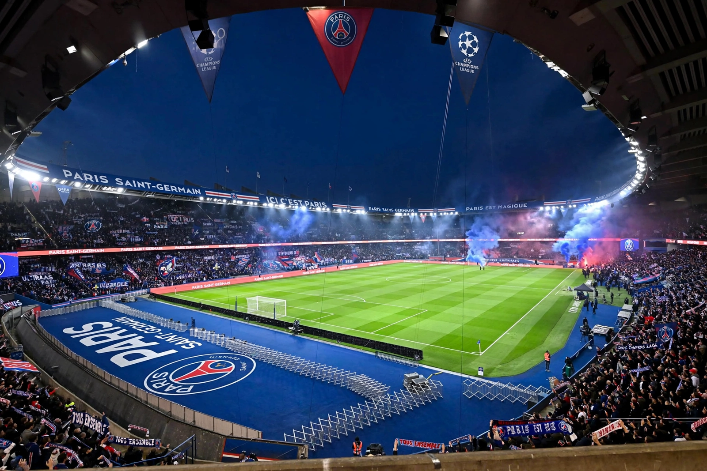

| Paris Saint-Germain Football Club | |
| Founded | 12 August 1970 (merger of Paris FC and Stade Saint-Germain) |
|---|---|
| Stadium | Parc des Princes, Paris (capacity ~48,000) |
| Owner | Qatar Sports Investments (QSI) |
| President | Nasser Al-Khelaifi |
| League | Ligue 1 |
| Nickname | Les Parisiens; Les Rouge-et-Bleu (The Red-and-Blues) |
| Major honours | Multiple Ligue 1 titles (record holders), Coupe de France titles; UEFA Cup Winners' Cup 1996; UEFA Champions League 2025 |

Paris Saint-Germain Football Club, commonly referred to as Paris Saint-Germain, PSG, or simply Paris, is a French professional football club based in Paris. Founded in 1970 through a merger, the club has played at the Parc des Princes since 1974. PSG became the dominant force in French football after its 2011 takeover by Qatar Sports Investments, assembling superstar squads featuring Zlatan Ibrahimović, Neymar, Kylian Mbappé, and Lionel Messi, and finally winning the UEFA Champions League in 2025.
PSG was formed by merging Paris FC and Stade Saint-Germainois; fashion designer Daniel Hechter, president from 1973, created the club's iconic blue shirt with a red vertical stripe bordered in white. The club won its first Ligue 1 title in 1986 and a second in 1994, plus the UEFA Cup Winners' Cup in 1996 — still the only European trophy won by a French club besides Marseille's 1993 European Cup until PSG's own triumph in 2025. Television company Canal+ owned the club from 1991 to 2006.
Qatar Sports Investments bought the club in 2011, making it one of the richest in world football. PSG won Ligue 1 in 2013 and repeatedly thereafter, dominating domestic cups. The 2017 signings of Neymar from Barcelona for a world-record €222 million and of Mbappé transformed the club's profile; Lionel Messi joined in 2021. European frustration persisted — including the famous 2017 "Remontada" collapse against Barcelona and a 2020 final loss to Bayern Munich — until, after shifting toward a younger, more collective squad under coach Luis Enrique, PSG won the 2025 Champions League, defeating Inter Milan 5–0 in the Munich final, the largest margin in a European Cup final.
PSG's fiercest rivalry is Le Classique against Olympique de Marseille, France's other mass-supported club. The club also fields elite women's and handball teams, and its Jordan Brand collaborations have made its shirts global fashion items.